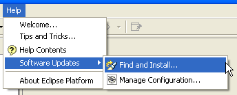
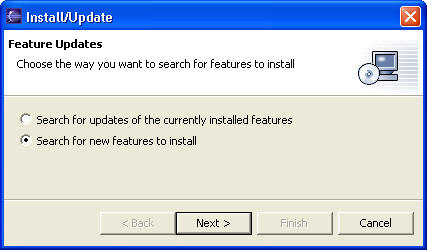
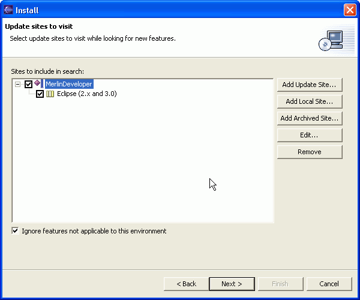

|
|
Eclipse has got a very comfortable update manager, through which you can install new software very easily.
An other advantage of the Update Manger is that you can check if there are new or updated software modules of your loaded plugins available. You can than download and install those modules with the Update Manager without downloading the whole Plugin again.
Please open the "Install/Update" Manager...

and select "Search for new features to install".

Please press "next".
You will enter the wizard page, which shows all currently available Update Sites. If you open the Update Manger the first time this page will empty.
Now press the "Add Update Site..." button...

and enter the name and the url of MerlinDevelopers Update Site as shown above.
After pressing Ok, you should see something like this...

If you open the Node in the TreeView, the Update Manager will connect to the Update Site. The "Next" button will be enabled if the connection is established.
Please select the checkbox "Other"
Pressing the "Next" button will switch to the next Wizard Page and show all available versions of MerlinDeveloper.
Select the feature and the version you want to install.

Pressing "Next" will lead you through the installation process.
After finishing the installation process you will be asked to restart your Eclipse installation.